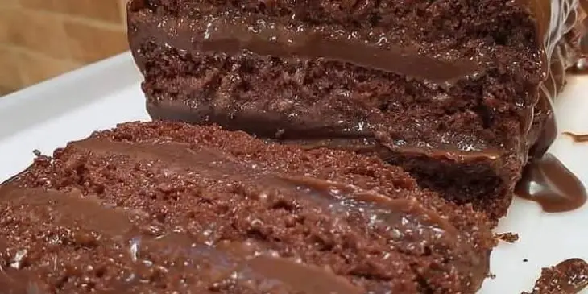

"Nega Maluca da Palmirinha"

See how to make this delicious Palmirinha crazy dish: a temptation in terms of practicality and flavor that you can't resist.
Ingredients
CAKE "NEGA MALUCA PALMIRINHA"
- 2 cups of cocoa powder
- ½ cup of coffee diluted in hot water (amount of coffee to taste, a spoon is recommended)
- 1 cup of sugar
- 3 eggs
- 1 cup of oil
- 2 cups of wheat
- 1 spoon of yeast
FROSTING "NEGA MALUCA" WITH CHOCOLATE BAR
- 1 can of cream
- 200 grams of dark chocolate
Steps
- DO NOT make this recipe in a mixer or blender, it must be prepared by hand.
- In a bowl, add the oil, eggs, cocoa and sugar, stir well until the eggs are incorporated, add the coffee with hot water.
- Stir well.
- When it is homogeneous and more liquid, add the sifted wheat and beat by hand.
- Add the yeast and stir slowly.
- Take everything to a greased shape.
- Place the recipe in a preheated oven at 180 degrees for 40 minutes.
- Remove and make holes, wait to cool down.
- In a saucepan, add the chopped chocolate and cream, stir well until thickened.
- Place on top of the cake.
Enjoy